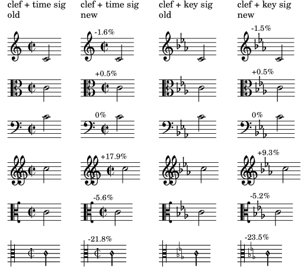

| [ << Top ] | [Top][Contents] | [ New for musical notation >> ] |
| [ < Top ] | [ Up: Top ] | [ Notes for source compilation and packagers > ] |
Major changes in LilyPond
- Margins are now wider by default following the general layout of
several publishers (and the recommendations of Elaine Gould).
In order to switch back to the previous settings (e.g., to keep the same layout when upgrading an existing score to version 2.26.0), add the following code:
\paper { top-margin = 5\mm bottom-margin = 6\mm top-system-spacing.basic-distance = 1 top-markup-spacing.basic-distance = 0 left-margin = 10\mm right-margin = 10\mm inner-margin = 10\mm outer-margin = 20\mm binding-offset = 0\mm } - Instead of generating PostScript or SVG output by itself, LilyPond
can now use the Cairo library to produce its output. This is
referred to as the ‘Cairo backend’, and can be turned on using
the
-dbackend=cairocommand-line option. This works for all output formats (PDF, SVG, PNG, PostScript), and brings speed and rendering fidelity improvements in SVG output in particular. However, keep in mind that this backend does not yet implement all features of the default backends. Among the features not currently supported are PDF outlines, the-dembed-source-codeoption for PDF, and theoutput-attributesproperty for SVG. - The distances between clefs and time signatures, together with the
distances between clefs and key signatures, are now calculated
differently. As a consequence, you will get better spacing for
extra-wide clefs (like
\clef "GG") or extra-slim clefs (like\clef "petrucci-c3").In the following image, both old and new positions are shown. The percentage gives the width difference of clef plus time signature and clef plus key signature, respectively.

Note that, as before, the widest clef in a staff group determines the horizontal position of all clefs in a system; this means, for example, that a piano score containing a treble and a bass clef doesn’t change at all.
If you want to restore the previous default values for whatever reason, add
\override Staff.Clef.space-alist.time-signature = #'(minimum-space . 3.5) \override Staff.Clef.space-alist.key-cancellation = #'(minimum-space . 3.5) \override Staff.Clef.space-alist.key-signature = #'(minimum-space . 4.2)to your score.
- The LilyPond major mode for the GNU Emacs text editor provided by the
Emacs Lisp package
lilypond-mode.elhas been renamed fromLilyPond-modetolilypond-mode. The namespace prefix for the package is changed to all lowercaselilypond-fromLilyPond-, meaning all its functions, variables, etc., now have the all-lowercase prefix. This change is made to comply with the idiomatic Emacs naming convention, most importantly, having the major mode name be the same as the package name that provides it. Therefore, this also makes it easier for new users to set up LilyPond in Emacs.As a result, this will break some existing Emacs configurations for end users. However, it only requires minimal changes to the Emacs initialization file. Here’s an example of setting up
lilypond-modeusing the built-inuse-packagemacro in Emacs:(use-package lilypond-mode :ensure nil :mode "\\.\\(ly\\|ily\\)$")
| Notes for source compilation and packagers |
| [ << Top ] | [Top][Contents] | [ New for musical notation >> ] |
| [ < Top ] | [ Up: Top ] | [ Notes for source compilation and packagers > ] |